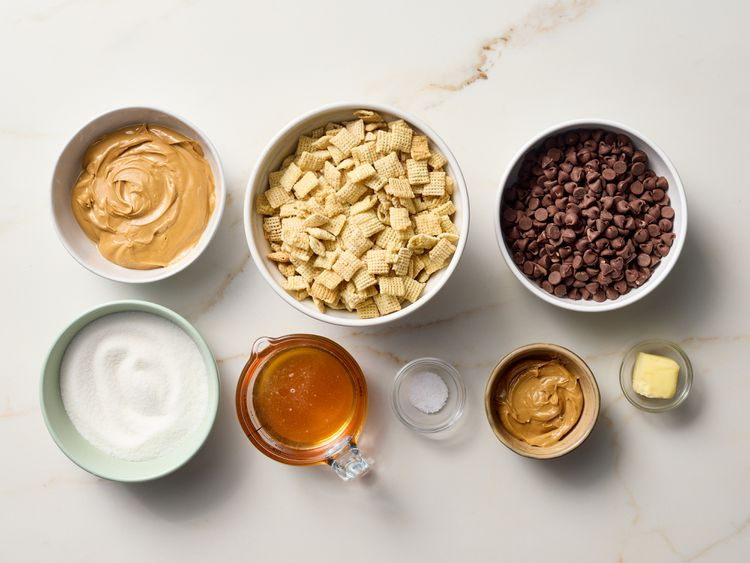
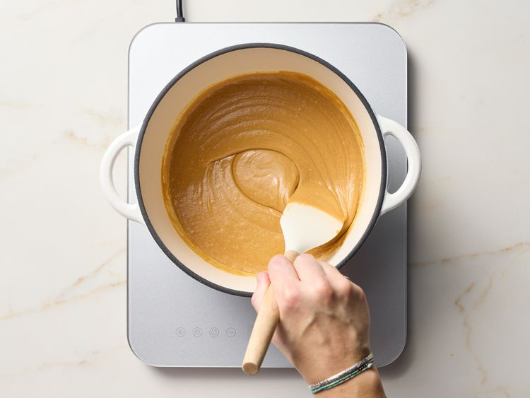
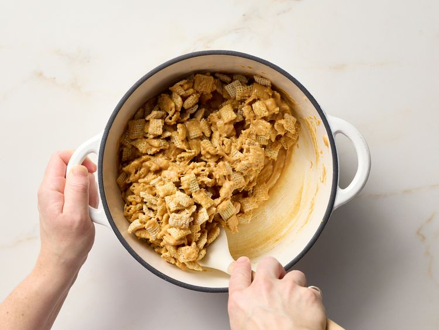
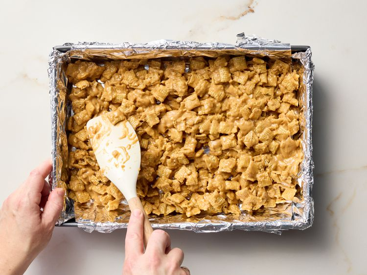
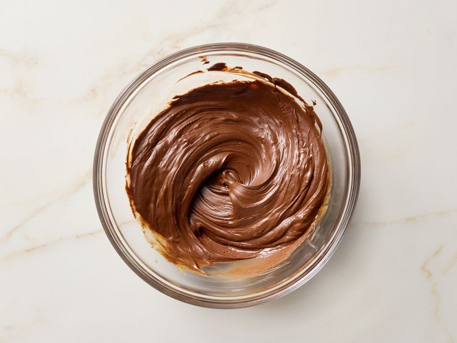
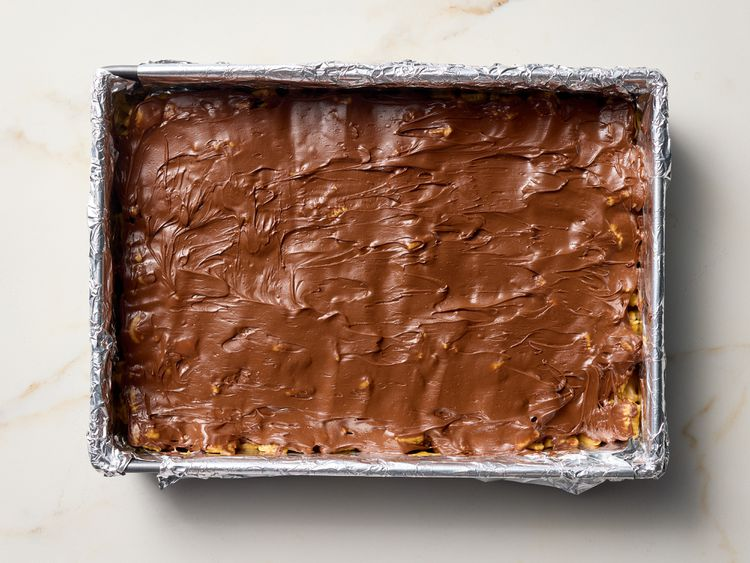
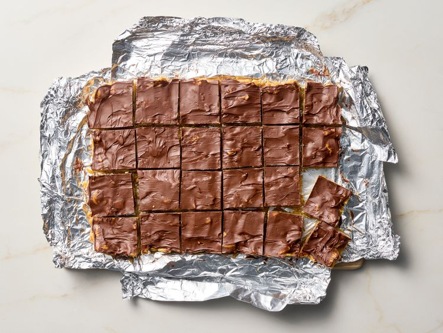

If you are a chocolate-peanut butter fan, these no-bake peanut butter chex bars are for you. Great textures and flavors with a subtle pop of salt, they taste great with a glass of milk.
Ingredients
- 3/4 cup honey
- 3/4 cup sugar
- 1 1/4 cups creamy peanut butter
- 1/2 teaspoon salt
- 6 cups crispy rice cereal squares, such as Chex®
- 2 cups semisweet chocolate chips
- 1/3 cup creamy peanut butter
- 2 tablespoons butter
Directions
-
Gather all ingredients. Line a 9x13-inch baking pan with foil and lightly coat with nonstick cooking spray.

-
Combine honey and sugar in a 4-to 6-quart Dutch oven. Heat over medium heat just until the mixture begins to boil, stirring frequently. Stir in 1 1/4 cups peanut butter and salt until fully combined.

-
Add cereal to the pot and stir until evenly coated.

-
Transfer mixture to the prepared pan, spreading and packing in an even layer. Set aside to cool.

-
Meanwhile, combine chocolate chips, 1/3 cup peanut butter, and butter in a medium microwave-safe bowl. Microwave on high until fully melted,1 to 1 1/2 minutes, stirring every 30 seconds.

-
Pour chocolate mixture over the bars, spreading evenly. Chill bars until topping is set, 1 hour.

-
Use foil to remove bars from the pan before cutting and serving. Store at room temperature for up to 5 days.

Recipe Reference
https://www.allrecipes.com/no-bake-peanut-butter-chex-bars-recipe-11743320Back to Recipes